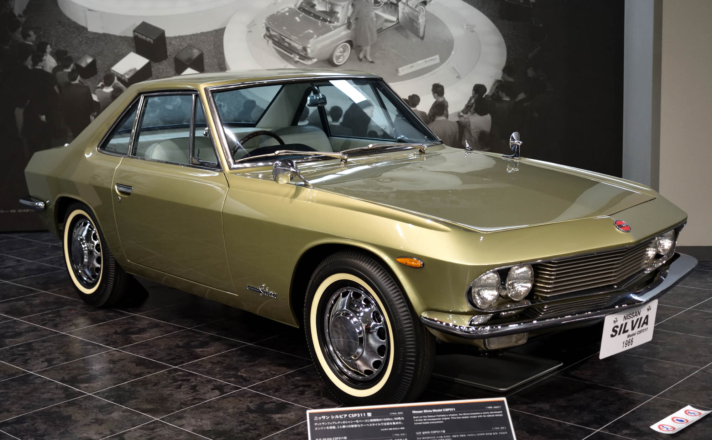

 |
AÑO DE LANZAMIENTO: 1975. MOTOR: 1.8 L L18 de 4 cilindros en línea. POTENCIA: 102cv. VELOCIDAD MÁXIMA: 175 km/h El S10 fue la primera superproducción en masa y la segunda generación del Silvia, esta estaba basada en la nueva plataforma S, se ideó como un compacto, propulsión trasera y deportivo. Las versiones japonesas fueron exclusivas para el mercado de Nissan en Japón llamado Nissan Prince Store junto con las unidades grandes del C110 Skyline. |